Glacier National Park is Montana's crown jewel, and argubly the most beautiful national park in the entire United States. With its scenic mountains and crystal blue lakes, the landscapes across the park make for a top-notch place to visit.
Going-to-the-Sun Road is the most famous road in Glacier, and it's no wonder why. With its highest elevation being over 2000 meters above sea level, the road brings you to some of the most pristine alpine scenery in the country. Logan Pass (Top Left), Paradise Meadows (Top Center), Piegan Pass (Top Right), and St. Mary's Visitor Center (Bottom Right) are absolutely gorgeous, while lakes Lake Mcdonald (Bottom Left) and St. Mary Lake (Bottom Center) contain equally spectacular views.
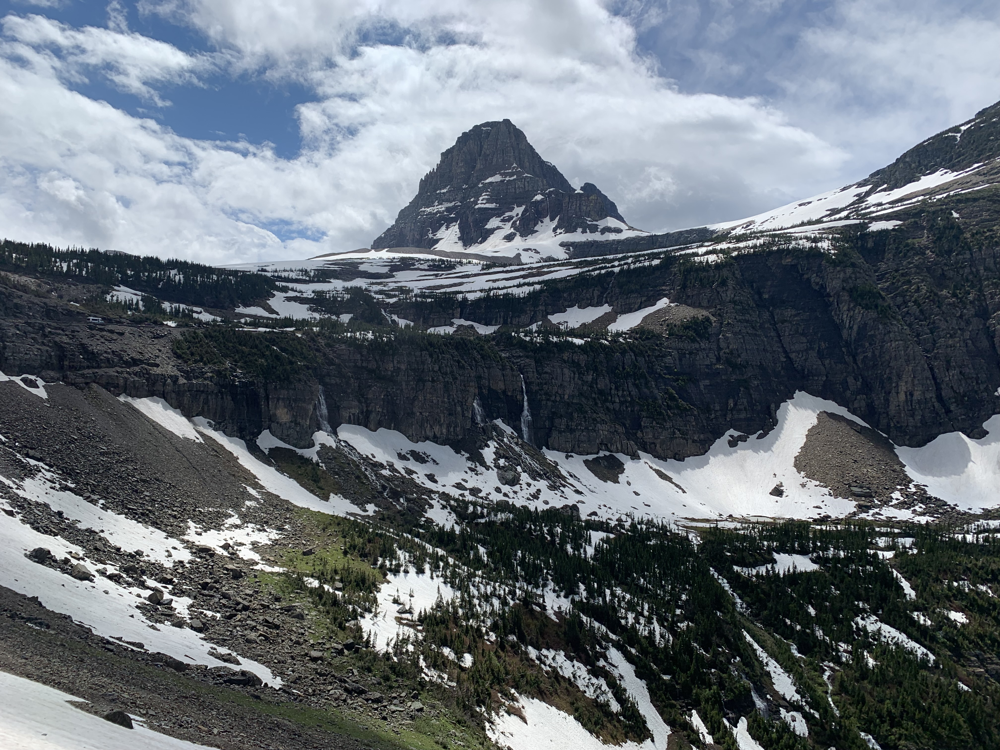

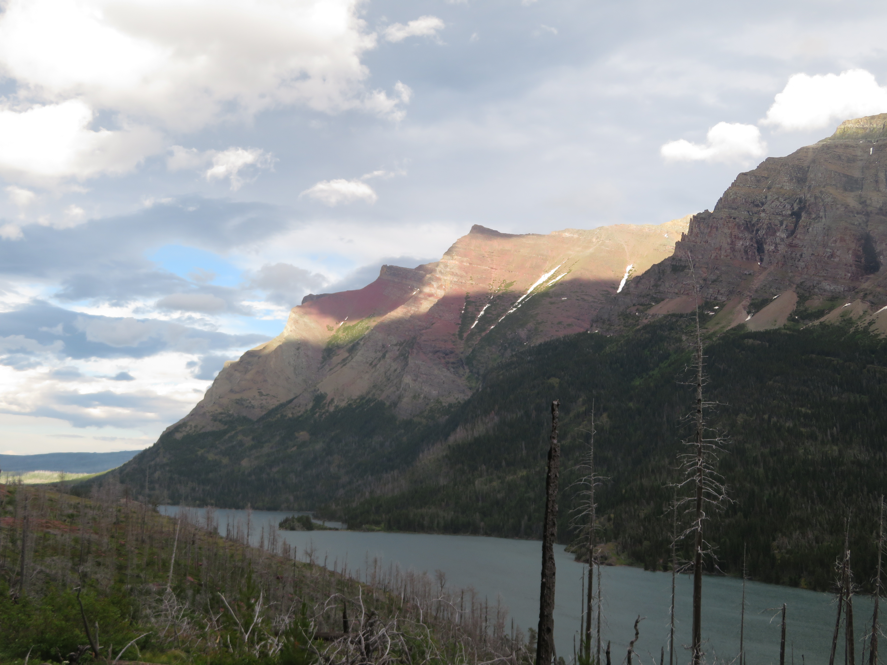
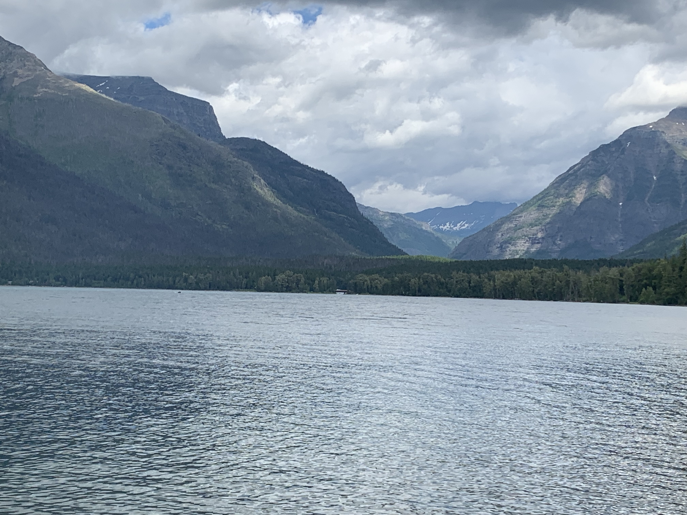
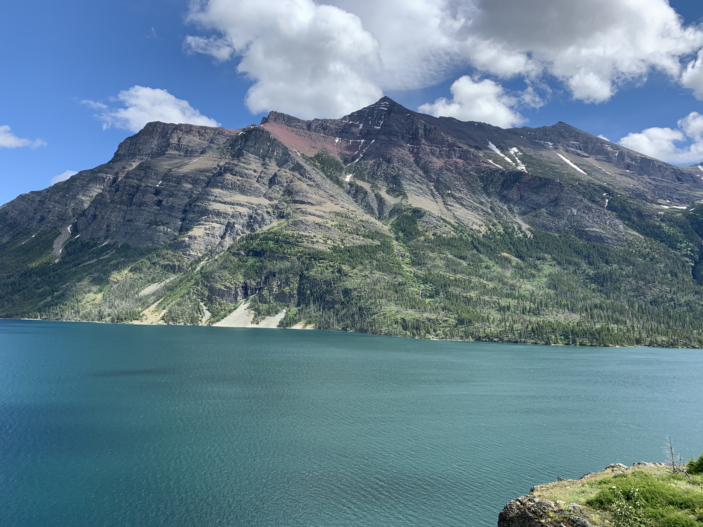
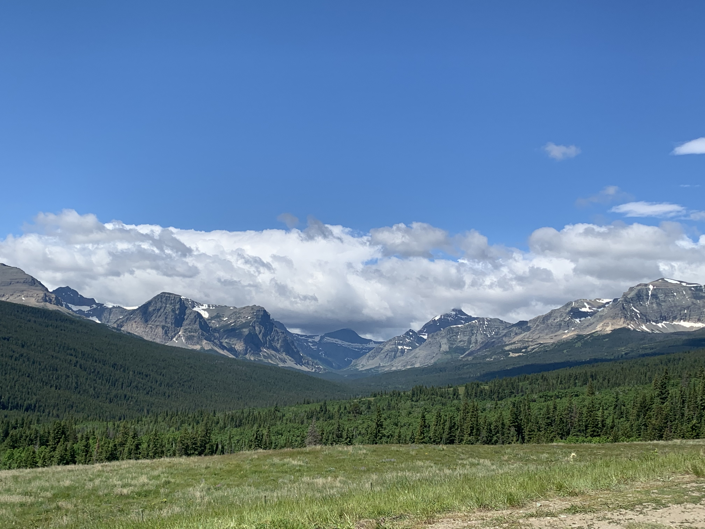
The other notable part of Glacier National Park is the Many Glacier area, which is argubly even more scenic than Going-to-the-Sun Road. Mt. Grinell (Top Left and Top Center) is stunning, overlooking the magical Swiftcurrent Lake (Bottom Left and Bottom Center) which can be viewed from the Grinell Glacier Trail. Other scenic alpine lakes include Sprague Lake (Top Right) on the Iceberg Lake Trail and Lake Sherburne (Bottom Right).
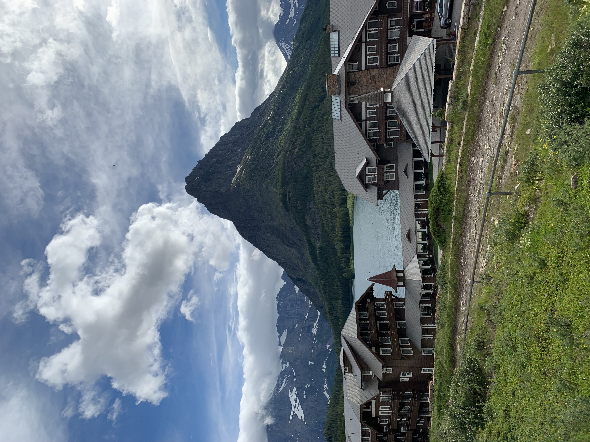
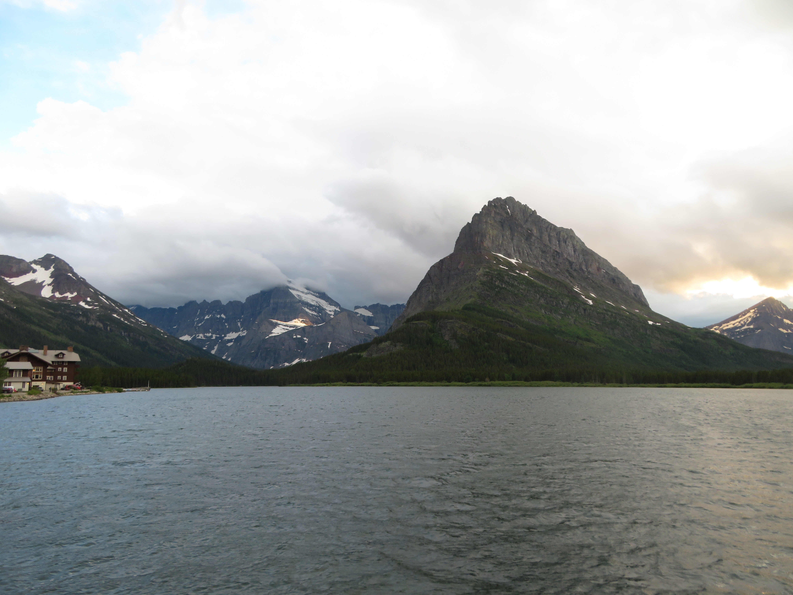
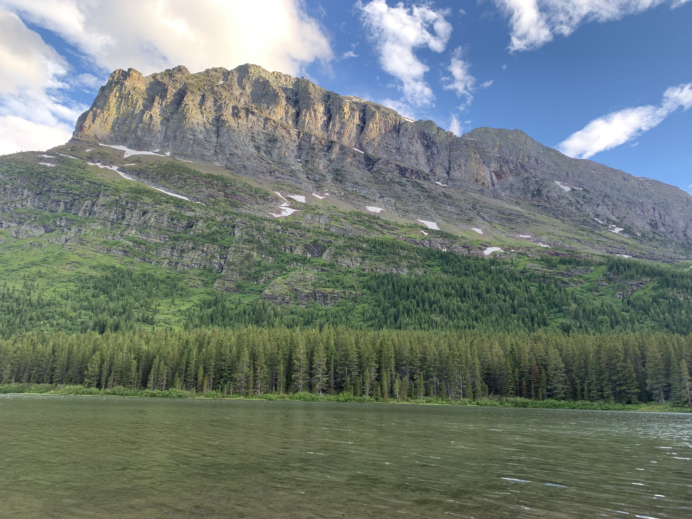
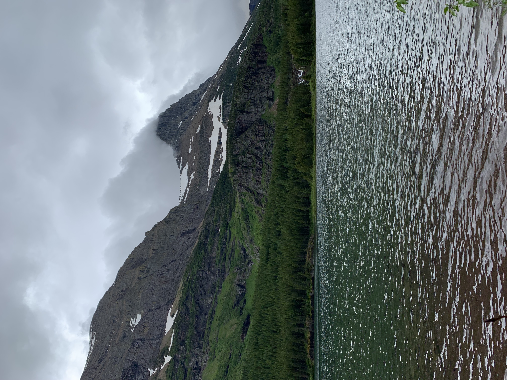
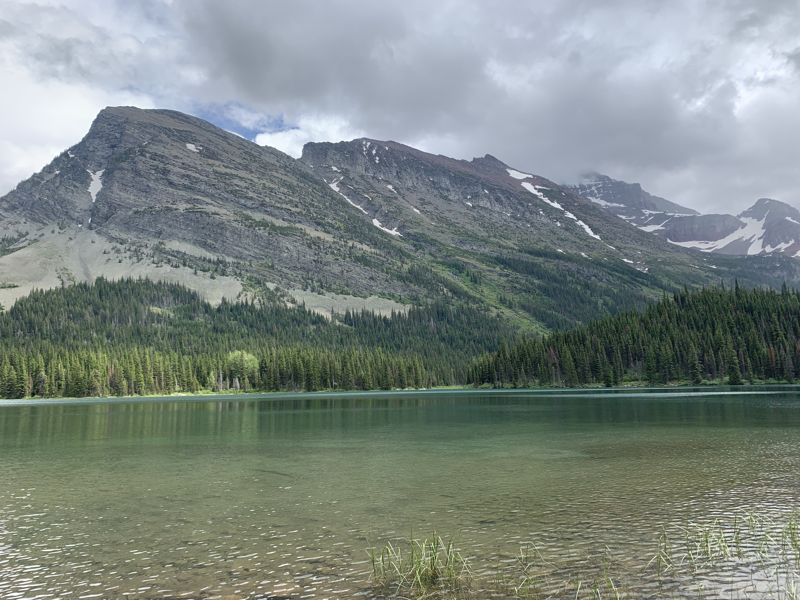
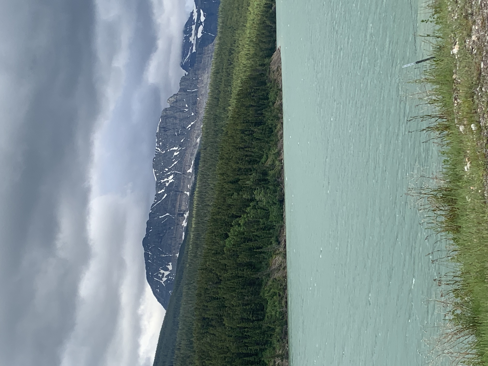
Glacier National Park's wildlife is extremely impressive, with my favorite being the grizzly bear, which I had two notable sightings. First of which was a mother bear and her 3 adorable cubs (Top Left), which at that point, was the most bear cubs I've ever seen at once. The 2nd grizzly sighting occured both days in Many Glacier, which were 2 grizzly bears (Top Center) on the mountain above the Swiftcurrent Inn. Plus, on our first day in Many Glacier, there were also some Mountain Goats (Top Right) high up on the mountain behind the grizzlies, which was super exciting to watch from the valley. Smaller creatures like Chipmunks (Bottom Left, Bottom Center) were frequently seen along both the Many Glacier area and the Going-to-the-Sun Road, while Mule Deer (Bottom right) were particularly common along the Iceberg Lake trail to Redrock Falls.


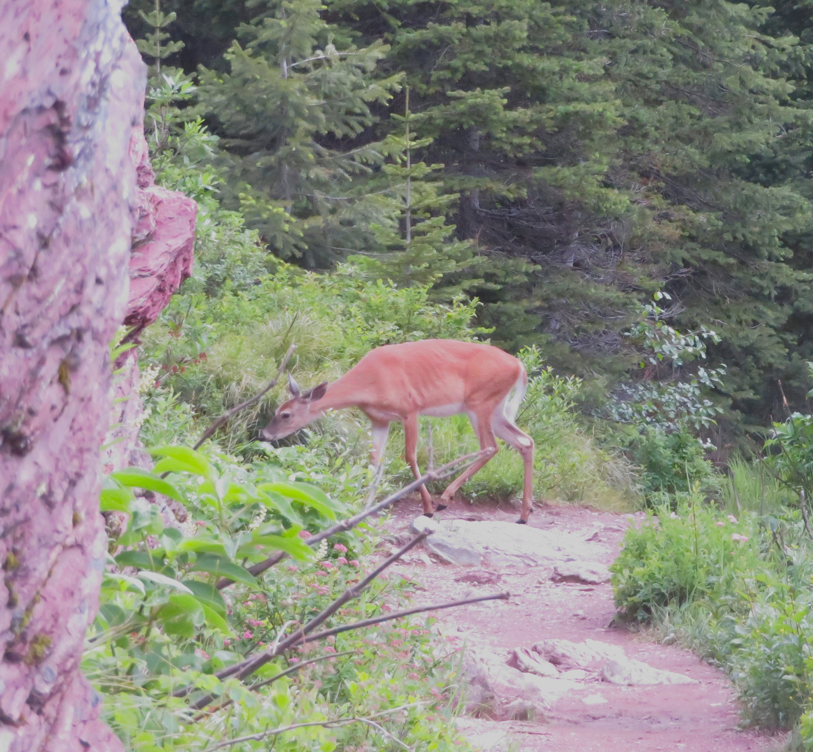